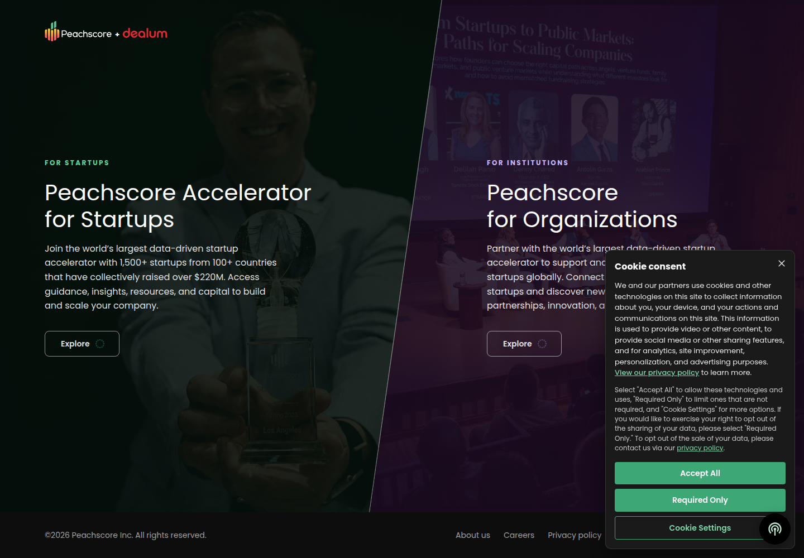
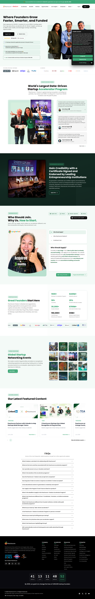
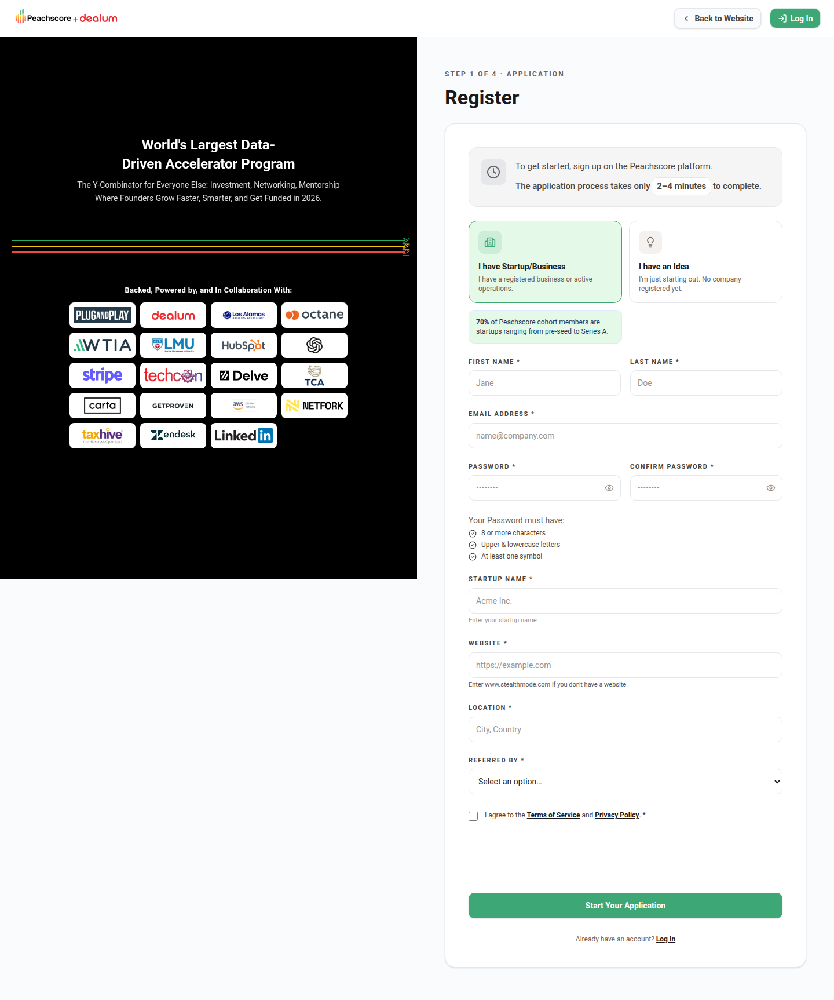
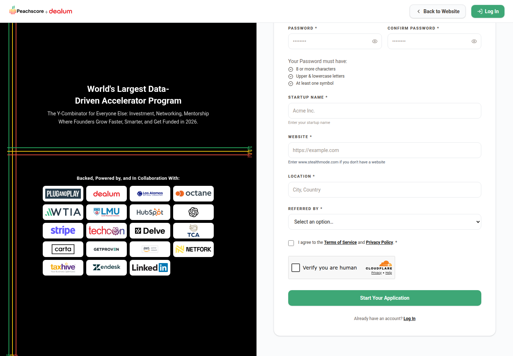

Profile
- Company
- Peachscore
- Url
- https://www.peachscore.com/
- Source Category
- AI pitch-deck reviewers
- Research Status
- Deep Cited Research / Draft Complete
- Current Status
- live - fetched https://www.peachscore.com/ directly on 2026-07-19, HTTP 200, copyright footer '©2026 Peachscore Inc.', active accelerator running 12 cohorts/year; no signs of shutdown or pivot.
- Founded Launch Year
- 2017 (founder Alex Mojtahedi left Plug and Play in 2017 to launch Peachscore). Source: peachscore.com/about via WebFetch.
- Company Age
- ~9 years (as of 2026)
- Hq Country
- US - Aliso Viejo, California (56 Enterprise, Aliso Viejo, CA 92656). Source: peachscore.com/about.
- Operating Area
- global - '1,500+ startups from 100+ countries'
- Target Users
- early-stage startup founders (accelerator applicants) and institutions/corporates seeking startup engagement (Peachscore for Organizations)
- Product Category
- data-driven startup accelerator; AI pitch/deck & startup scoring ('FICO Score for Startups'); founder-investor / capital access
Product Flows
- Swipe Card Interface
- not found / no evidence of swipe UI
- Mutual Match
- not found / no public source
- Ai Matching Scoring
- yes - investor/peer/customer matchmaking
- Ai Deck Scoring
- yes
- Founder To Founder Flow
- yes - peer matching
- Founder To Investor Flow
- yes
- Project Profiles
- not found / no public source
- Messaging Collaboration
- not found / no public source beyond general accelerator mentorship/guidance access
- Mobile App
- not found / no App Store or Google Play listing located
- Web App
- yes
Security & Documents
- Nda Gated Unlock
- not found / no public source
- Data Room
- not found / no public source
- E Signature
- yes (per original pass; not independently re-confirmed in this research pass - flagged for manual verification)
- Meeting Prep Ai Briefing
- yes - AI readiness tools
Pricing, Funding & Traction
- Pricing Model
- not found / no public pricing page located (accelerator likely takes equity and/or is sponsor/partner-funded; enterprise side is B2B partnership-priced)
- Business Model
- Hybrid: accelerator-for-equity model for startups (cohort program) plus B2B 'Peachscore for Organizations' offering (partnership/licensing revenue from corporates and institutions)
- Total Funding
- $1.7M total across 4 rounds per Crunchbase (company filed under legal name 'Createnu Ventures', crunchbase.com/organization/createnu-ventures); includes an undisclosed Convertible Note from Plug and Play and Root and Shoot Ventures
- Funding Rounds
- 4 rounds totaling $1.7M per Crunchbase (as 'Createnu Ventures'), incl. an undisclosed Convertible Note
- Investors
- Plug and Play (Saeed Amidi, Sobhan Khani), Root and Shoot Ventures; advisory board includes Dave Berkus and Alex Marquez (Experian Ventures)
- Funding Source Type
- Corporate/strategic investors + convertible note
- Last Funding Date
- not found / no public source
- Users Traction
- 1,500+ startups from 100+ countries have collectively raised over $220M (homepage claim); runs 12 cohorts annually
- Deals Funding Facilitated
- $220M+ collectively raised by Peachscore-accelerated startups (homepage claim, not independently audited)
- Partnerships
- Plug and Play (major shareholder/partner), OpenAI (startups get $10K in free credits), Dealum (co-branded platform expansion, 2024, described as 'world's largest angel group community'), US Government agencies, Loyola Marymount University (LMU)
- Media Coverage
- not found / no specific press articles located beyond company-published partnership announcements
- Product Update Activity
- Dealum partnership expansion noted for 2024; site copyright updated to 2026, suggesting ongoing maintenance
- Acquisition Rebrand History
- not found / no evidence of acquisition or rebrand
Scores
- Product Overlap Score
- 2
- Feature Maturity Score
- 3
- Market Traction Score
- 3
- Funding Strength Score
- 3
- Ai Depth Score
- 3
- Nda Security Strength Score
- 1
- Network Moat Score
- 4
- Direct Threat Score
- 2.7
- Source Confidence
- Medium
Evidence Notes
- Primary Sources
- https://www.peachscore.com/
https://peachscore.com/about
https://www.peachscore.com/enterprise/why-peachscore-enterprise
https://www.peachscore.com/opportunities/ai-powered-tools - Secondary Sources
- https://www.crunchbase.com/organization/createnu-ventures
https://www.linkedin.com/company/peachscore - Unsupported Claims
- '$220M+ collectively raised' and '1,500+ startups/100+ countries' are self-reported homepage figures not independently verified.
- Contradictions
- Peachscore's Crunchbase organization page is registered under the legal/former name 'Createnu Ventures' rather than 'Peachscore' - worth noting for anyone cross-referencing funding data.
- Last Checked
- 2026-07-19
- Notes
- Peachscore is fundamentally an accelerator/scoring platform, not a matchmaking app - its 'network moat' comes from the Plug and Play ecosystem and cohort scale rather than from an NDA-gated collaboration flow. Weakest fit to BizMatch's core swipe/NDA/Three-Paths model of the batch so far, but has real institutional backing and funded-startup traction.
Registration Flow
Research date: 2026-07-19. Screenshots are sanitized public copies from the private registration-flow capture set; credentials, tokens, verification links/codes, browser chrome, and private identifiers are not intentionally published.
Outcome: stopped at CAPTCHA / Cloudflare / anti-bot verification.
Stop point: Untouched official app.peachscore.com/signup registration/application page at its Cloudflare 'Verify you are human' control, before any personal/startup data entry, consent, application submission, account creation, email verification, onboarding, investment, payment, KYC, or financial commitment
Blocker / boundary: Peachscore's signup route is explicitly step 1 of a four-step accelerator application, requires truthful personal and startup/application information not present in the authorized credential file, and places an unchecked Cloudflare 'Verify you are human' challenge immediately before 'Start Your Application.' The task requires stopping at both anti-bot controls and fundraising/application submission, so no fields were filled and the challenge and CTA were not used.
- Official Peachscore landing page. Peachscore's official landing page separates its offering into an accelerator for startups and a product for institutions. The startup route describes guidance, resources, and access to capital and exposes an Explore action.
- Accelerator program and official Apply route. The official startup accelerator page presents the program as a data-driven accelerator and provides Apply and Apply Now actions. The visible copy describes investment, networking, mentorship, and funding opportunities; the application actions point to the first-party app.peachscore.com/signup route.
- Registration is application step 1 of 4. The official signup page labels the flow 'STEP 1 OF 4 · APPLICATION' and 'Register.' It first asks the applicant to classify themselves as having a startup/business or only an idea, then requests first name, last name, email, password and confirmation, startup name, website, location, referral source, and agreement to the Terms of Service and Privacy Policy. The page states that the application takes 2–4 minutes and ends with a 'Start Your Application' action. The empty form was captured without entering private data.
- Cloudflare challenge and application-submission stop point. Immediately above 'Start Your Application,' the official form embeds a Cloudflare security challenge with an unchecked 'Verify you are human' checkbox. The task forbids attempting or bypassing anti-bot controls and requires stopping before an accelerator/fundraising application is submitted, so the challenge was left untouched and the application was not started.



